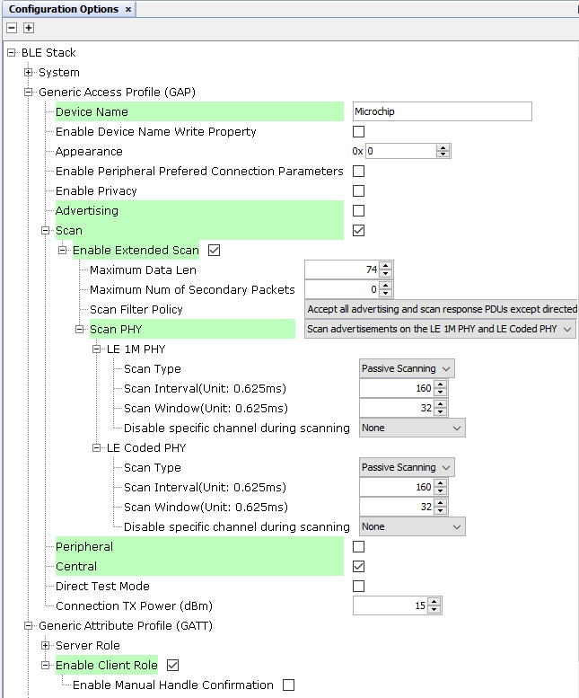

3.1.1.7 BLE Transparent UART Central with LE Coded Phy
Getting Started with Central Building Blocks
Introduction
This document enables users create a central device and send/receive characters between 2 connected BLE devices over Microchip proprietary Transparent UART Profile. The central and peripheral devices using LE Coded Phy in this section are 2 WBZ451devices. The following instructions are applicable for a BLE Central device.
Users can choose to just run the precompiled Application Example hex file on the WBZ451Curiosity board and experience the demo or can go through the steps involved in developing this Application from scratch.
It is recommend to follow the examples in order, by learning the basic concepts first and then progressing to the more advanced topics.
Recommended Reading
Hardware Requirement
| Tool | Qty |
|---|---|
| WBZ451Curiosity Board | 2 |
| Micro USB cable | 2 |
SDK Setup
Software Requirement
Smartphone App
None
Programming the precompiled hex file or Application Example
Programming the hex file using MPLABX IPE
-
Precompiled Hex file is located in
"<Harmony Content Path>\wireless_apps_pic32cxbz2_wbz45\apps\ble\building_blocks\central\profiles_services\central_trp_uart_codedPhy\hex"folder - Precompiled Hex file is located in
"<Harmony Content Path>\wireless_apps_pic32cxbz2_wbz45\apps\ble\building_blocks\peripheral\profiles_services\peripheral_trp_uart_codedPhy\hex"folder -
For more details on the step, refer to Programming A DeviceNote: Ensure to choose the correct Device and Tool information
Programming the Application using MPLABX IDE
-
Follow the steps mentioned in Running a Precompiled Example.
-
Open and program the Application Example "central_trp_uart.x" located in
"<Harmony Content Path>\wireless_apps_pic32cxbz2_wbz45\apps\ble\building_blocks\central\profiles_services\central_trp_uart_codedPhy\firmware"using MPLABX IDE - Open and program the Application Example
"peripheral_trp_uart.x" located in
"<Harmony Content Path>\wireless_apps_pic32cxbz2_wbz45\apps\ble\building_blocks\peripheral\profiles_services\peripheral_trp_uart_codedPhy\firmware"using MPLABX IDE
For more details on how to find the Harmony Content Path, refer to Installing MCC Pluggin
Demo Description
Upon programming the demo application, central device (WBZ451) will start scanning for near by peripheral devices to connect. After a connection has been made data can be sent back and forth over UART between the two devices that are connected.
Demo will print start of the scanning "Scanning",connected "Connected!" and disconnected "Disconnected" state on a terminal emulator like TeraTerm (Speed: 115200, Data: 8-bit, Parity: none, stop bits: 1 bit, Flow control: none) The Application Data sent to the connected peripheral device must be entered in the terminal emulator.
Testing
Users must use another WBZ451 Curiosity Board configured as 3.1.2.8 BLE Transparent UART Peripheral with LE Coded Phy
Demo Experience when using 2 WBZ451Curiosity boards configured as Peripheral and Central device. This section assumes that a user has already programmed the peripheral_trp_uart_codedPhy and central_trp_uart_codedPhy application on 2 WBZ451Curiosity Boards.
Board 1: WBZ451Curiosity Board with peripheral_trp_uart_codedPhy application Programmed
Board 2 : WBZ451Curiosity Board with central_trp_uart_codedPhy applicaton Programmed

After connection establishment, both the peripheral device (Board1) and central device(Board2) will display "Connected!" message on respective terminal windows.
Users can now start sending data back and forth between the central and peripheral device using the terminal emulator. Characters entered on either terminals will immediately be sent to the peer devices
Developing the Application from scratch using MPLAB Code Configurator
-
Create a new MCC Harmony Project. For more details, refer to 2.5 Creating a New MCC Harmony Project.
-
Import component configuration: This step helps users setup the basic components and configuration required to develop this application. The imported file is of format .mc3 and is located in the path
"<Harmony Content Path>\wireless_apps_pic32cxbz2_wbz45\apps\ble\building_blocks\central\profiles_services\central_trp_uart_codedPhy\firmware\central_trp_uart.X".For more details on how to import the component configuration , refer to 14.3 Importing Existing App Example Configuration .
- Accept Dependencies or satisfiers, select Yes
- Verify if the Project Graph window has all the expected configuration
Verifying Scanning ,Connection and Transparent Profile Configuration
- Select BLE_Stack component in project graph
Figure 3-4. .  - Select Transparent Profile component in project graph
Figure 3-5. . 
Generating a Code
For more details on code generation, refer to14.2 MPLAB Code Configurator(MCC) Code Generation.
Files and Routines Automatically generated by the MCC
After generating the program source from MCC interface by clicking Generate Code, the BLE configuration can be found in the following project directories

The OSAL, RF System, BLE System initialization routine executed during program initialization can be found in the project files. This initialization routine is automatically generated by the MCC
The BLE stack initialization routine excuted during Application Initialization can be found in project files. This intitialization routine is automatically generated by the MCC. This call initializes and configures the GAP, GATT, SMP, L2CAP and BLE middleware layers.

| Source Files | Usage |
|---|---|
| app.c | Application State machine, includes calls for Initialization of all BLE stack (GAP,GATT, SMP, L2CAP) related component configurations |
app_ble\ app_ble.c | Source Code for the BLE stack related component configurations, code related to function calls from app.c |
| app_ble\app_ble_handler.c | All GAP, GATT, SMP and L2CAP Event handlers |
| app_ble\app_trspc_handler.c | All Transparent UART Client related Event handlers |
| ble_trspc.c | All Transparent Client Functions for user application |
Header Files
ble_gap.h: This header file contains BLE GAP functions and is automatically included in the app.c fileble_trspc.h:This header file associated with API’s and structures related to BLE Transparent Client functions for Application User
Function Calls
MCC generates and adds the code to initialize the BLE Stack GAP, GATT, L2CAP and SMP in APP_BleStackInit() function
APP_BleStackInit() is the API that will be called inside the Applications Initial State -- APP_STATE_INIT in app.c
User Application Development
Include
-
ble_trspc.h in app.c, BLE Transparent UART Server related API's are available here.
-
osal/osal_freertos_extend.h in app_trsps_handler.c, OSAL related API's are available here
-
definitions.hin all the files where UART will be used to print debug information Tip: definitions.h is not specific to just UART peripheral, instead it should be included in all application source files where peripheral functionality will be exercised -
User action is required as mentioned in User Action.
Start Scanning
BLE_GAP_SetExtScanningEnable(BLE_GAP_SCAN_MODE_OBSERVER, &extScan );This API is called in the Applications initialstate - APP_STATE_INIT in app.c. Scan duration is 100 secs
Scan Results and initiating a BLE connection
-
BLE_GAP_EVT_EXT_ADV_REPORT event is generated upon finding Adverstisements on legacy channels
-
BLE connection can be initiated by using the BLE_GAP_ExtCreateConnection
Connected & Disconnected Events
-
In app_ble_handler.c BLE_GAP_EVT_CONNECTED event will be generated when a BLE connection is completed
Connection Handler
-
Connection handle associated with the peer peripheral device needs to be saved for data exchange after a BLE connection
p_event->eventField.evtConnect.connHandle has this information
Transmit Data
-
Add "APP_MSG_UART_CB" to the generated APP_MsgId_T
Figure 3-6. . 
- BLE_TRSPC_SendData(conn_hdl , 1, &data); is the API to be used for sending data towards the central device Note: The precompiled application example uses a UART callback to initiate the data transmission upon receiving a character on UART
Example Implementation for Transmitting the received data over UART using the BLE_TRSPC_SendData API


Receive Data
-
BLE_TRSPC_EVT_RECEIVE_DATA is the event generated when data is sent from central device
-
Users need to use the BLE_TRSPC_GetDataLength(&data_len) API to extract the length of application data received
-
BLE_TRSPC_GetData(&conn_hdl, data); API is used to retrieve the data, conn_hdl is the value obtained from Connection Handler section
Example Implementation for printing the received data from peripheral device over UART
/* TODO: implement your application code.*/
uint16_t data_len;
uint8_t *data;
// Retrieve received data length
BLE_TRSPC_GetDataLength(p_event->eventField.onReceiveData.connHandle, &data_len);
while (data_len) {
// Allocate memory according to data length
data = OSAL_Malloc(data_len);
if (data == NULL)
break;
// Retrieve received data
BLE_TRSPC_GetData(p_event->eventField.onReceiveData.connHandle, data);
// Output received data to UART
SERCOM0_USART_Write(data, data_len);
// Free memory
OSAL_Free(data);
//check again
data_len = 0;
BLE_TRSPC_GetDataLength(p_event->eventField.onReceiveData.connHandle, &data_len);
}For more details on exercising various other BLE functionalities, refer to BLE Stack API
For more details, refer to BLE Multilink Transparent UART